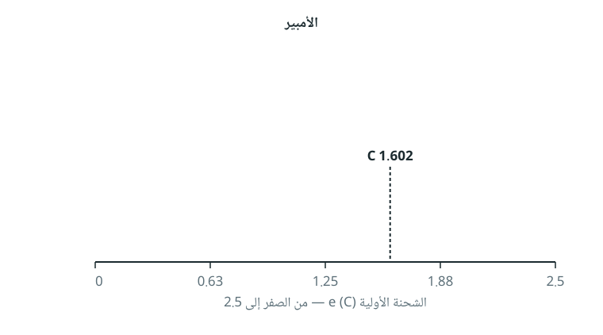

الأمبير
Ampere
الأمبير وحدة التيار الكهربائي في النظام الدولي، ورمزه A. يُعرَّف بتثبيت الشحنة الأولية e عند 1.602 176 634×10⁻¹⁹ كولوم، فصار تعريفه مبنياً على عدد الشحنات لا على قوة بين سلكين.
الأمبير هو وحدة التيار الكهربائي في النظام الدولي للوحدات، ورمزه A. يعرّفه كتيّب النظام الدولي بتثبيت القيمة العددية للشحنة الأولية e عند 1.602 176 634×10⁻¹⁹ حين تُعبَّر بوحدة الكولوم، والكولوم يساوي أمبيراً في ثانية، والثانية معرَّفة بتردد انتقال ذرة السيزيوم. ويترتب على هذا التعريف أن الأمبير هو التيار الموافق لعبور 1/(1.602 176 634×10⁻¹⁹) شحنة أولية في الثانية، أي نحو 6.241 509×10¹⁸ إلكترون في الثانية. وقبل مراجعة 2018 كان الأمبير معرَّفاً بالقوة المغناطيسية بين سلكين متوازيين طويلين يحملان التيار نفسه، وهو تعريف عملي صعب التحقيق؛ فاستُبدل بتعريف مبني على ثابت أساسي. مثال: مصباح يسحب 0.5 أمبير تعبره نحو 3.12×10¹⁸ إلكتروناً في الثانية.
كيف تعمل الظاهرة؟
الأمبير يقيس معدل عبور الشحنة عبر مقطع، لا كمية الشحنة العابرة. فإذا عبر مقطع موصل عدد N من الإلكترونات في زمن t، فالتيار I = N·e/t. وفي الموصل المعدني يحمل التيار إلكترونات التوصيل وحدها، وتتحرك عكس اتجاه التيار الاصطلاحي، بينما تبقى الأيونات الموجبة في مواضعها. وفي المحاليل والغازات المؤيَّنة يحمل التيار أيونات موجبة وسالبة في اتجاهين متعاكسين، فيُجمع إسهام النوعين. وفي أنابيب التفريغ يحمل التيار إلكترونات وأيونات. لذلك فالأمبير قياس معدل عبور شحنة صافٍ، لا قياس سرعة إلكترونات.
العلاقة بالأرقام
I = Q/t، ووحدته A = C/s. و1 C = 1 A·s. وعدد الإلكترونات في الثانية = I/e = I×6.241 509 074×10¹⁸. وe = 1.602 176 634×10⁻¹⁹ C قيمة تامة. وΔν_Cs = 9 192 631 770 Hz قيمة تامة. مثال: تيار 2 A يعني Q = 2 C في كل ثانية، أي 1.2483×10¹⁹ إلكتروناً في الثانية. وفي موصل مقطعه 1 mm² وكثافة تيار 2 A/mm² يكون التيار 2 A.
مفاهيم متقاربة
الأمبير معدل لا كمية: الفرق عن الكولوم فرق بين مشتقة ومتكاملة. والفرق عن الفولت أن الفولت طاقة لكل شحنة والأمبير شحنة لكل زمن. والتعريف الحالي يختلف جوهرياً عن تعريف ما قبل 2019: القديم كان يثبّت μ₀ عند 4π×10⁻⁷ N/A² ويستنتج الأمبير من قوة بين سلكين، والجديد يثبّت e ويستنتج الأمبير من عدد شحنات. ونتيجة ذلك أن μ₀ لم يبقَ تاماً بل صار مقيساً بعدم يقين نسبي نحو 1.6×10⁻¹⁰.
حدود التطبيق
لا يُقاس تيار متغير بزمن بمعنى الأمبير المستمر بلا تحديد: يُقال تيار فعّال أو عظمي أو لحظي. وفي التيارات المترددة العالية التردد لا يبقى التيار موحّداً على مقطع الموصل بسبب الأثر القشري، فقياس الأمبير الكلي لا يصف توزيعه. ولا يصحّ استعمال الأمبير لوصف كمية شحنة مخزَّنة، فذلك شأن الكولوم. وفي الدارات ذات المصادر المتعددة يُقاس التيار عند نقطة محددة لا «في الدارة» عموماً.

| الكمية | القيمة | المصدر |
|---|---|---|
| الشحنة الأولية e | 1.602 176 634×10⁻¹⁹ C | [1] |
| عدد الشحنات الأولية في أمبير واحد في الثانية | 6.241 509 074×10¹⁸ s⁻¹ | [2] |
| تردد انتقال السيزيوم Δν_Cs | 9 192 631 770 Hz | [3] |
المصادر
- 1 SI base unit: ampere (A) — BIPM (2019). www.bipm.org/en/si-base-units/ampere · اطُّلع عليه 2026-11-21
- 2 The International System of Units (SI), 9th edition (2019) — BIPM — Bureau International des Poids et Mesures (2019). www.bipm.org/en/publications/si-brochure · اطُّلع عليه 2026-11-21
- 3 CODATA Value: elementary charge — NIST — CODATA 2022 recommended values (2024). physics.nist.gov/cgi-bin/cuu/Value?e · اطُّلع عليه 2026-11-21
استشهد بهذا المصطلح
الصيغتان مبنيتان من بيانات الصفحة نفسها: العنوان والتاريخ ورابط النسخة المنشورة.
الأمبير — Ampere. (2026). ديوان المعرفة — انفراد. https://infiradev.com/diwan/terms/term-ampere.html
@misc{term-ampere2026,
title = {الأمبير},
titleaddon = {Ampere},
howpublished = {{ديوان المعرفة — انفراد} — مرجع علمي عربي},
year = {2026},
url = {https://infiradev.com/diwan/terms/term-ampere.html},
urldate = {2026-11-26},
note = {مراجعة علمية: hermes (مراجعة معتمدة 2026-11-26)}
}
راجعه: hermes (مراجعة معتمدة 2026-11-26) · 2026-11-26 · آخر تحديث 2026-11-21